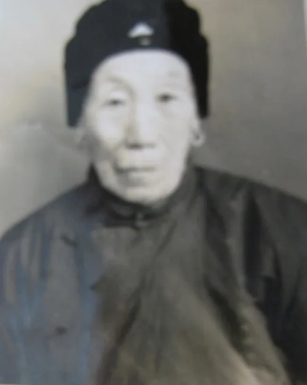

二 我的祖父母
我的爷爷范祥经，他是当时家里文化程度最高的人，是最不愿意面朝黄土背朝天，与土坷垃打交道的人。当过私塾先生，做过买卖，干过好多别人都没干过的事情。他曾经种过蓝（什么植物不详）。奶奶说，家里那五六个大水缸，就是他当年用来“沤蓝”的，将沤出来的蓝黑色的水晒熬，做成蓝色的植物染料。“绑猪鬃”- 结头发网是他和他的好朋友们引进的。他还烧过窑，开过饭店，因为人脉多口碑好，他牵头干了不少新鲜事儿。
因为我爷爷不能老老实实在家里种地，太爷爷不喜欢他，哥仨分家时他特别吃亏。长子分到老宅子；三儿子分到村中间老槐树前钱库的房子；我爷爷分到的是村西头的碾屋子和长工们住的房子，紧靠西门围子墙里面，三面空旷没有邻居，地也没有好地，虽然不至挨饿，比起分家前，差距很大。
奶奶一辈子都在骂他是不务正业的作索鬼。但我爸爸妈妈却说他是开明人士，是具有创新精神的实干家。他在分家分到的菜园子周围栽上了一圈楸树，中间栽上了各种果树，亲自搞嫁接，培育出了当地又大又好的大青皮桃。记得小时候我挽着小筐，装着十来个熟透的桃子，去南张氏赶集卖桃。老头们就会围过来，指着桃子介绍“这就是范家庄西门里范祥经当年用白杨树嫁接的大青皮桃啊......” 我那时小，害怕他们白吃不拿钱，使劲捂着不让拿。爷爷栽的桃树品种多，“六月鲜”、“八月忙” 陆续成熟，其他的苹果、李子、葡萄、沙果都连续结果相继成熟，馋得好多大孩子经常来偷。记得当时有几个坏小子，晚上来偷桃子，贪多没法儿拿，就脱下裤子将两条裤腿扎起来，装满桃子，搭在脖子上驼着，跳下树，钻进西墓田里去吃，撑得肚子疼。第二天他们来找我奶奶，开玩笑说：“二妈妈，你昨晚上看园子了没有？你那桃子太好吃了，把我撑得拉肚子呢！”奶奶是个慈祥幽默的人：“告诉你们， ‘桃饱人，杏伤人，李子行里抬死人’，小心你们的小命 ......” 每逢这时候奶奶才流露出一丝思念爷爷的感情:“唉！这些树都是你爷爷栽的啊！他被鬼子打死了，这园子也不行了......”

他在分家分到的菜园子周围栽上了一圈楸树，中间栽上了各种果树
爷爷处在那个兵荒马乱的年代。日寇入侵前，中国是军阀混战，匪盗特多。潍北人经历了“长毛反”、“撸把油”等杂乱匪患。老百姓的日子很难过，爷爷做任何生意，几乎都是赔本散伙。奶奶生气埋怨他，不在家好好耕地种庄稼，整天喝酒聊友胡转悠。
到后来爸爸他们年轻一代起来了，发动群众组织共产主义小组和抗日武装，爷爷积极支持他们。我们家因临近西大门三面无邻，先进的年轻人经常有秘密活动，就以我家为据点，有人来往，不易被发现。而每当这时爷爷就给他们站岗放哨，后来又给他们送信。再后来就去给抗日武装搜集药品。他亲自研制的刀疮药非常好用，我小时候割破手出血了，就把他留下来的刀疮药敷上，立刻就能止血止痛。
有一年日本鬼子大扫荡，爷爷着急去送信，跑到村南一片麦地时，趴在地陇里藏着躲避鬼子杀害的很多老少爷们儿喊他赶紧趴下藏起来。他顾不得危险，继续往城里跑。大伙远远地看见，一个日本兵跪下来端枪瞄准他，他被击中腹部，肠子淌了出来。乡亲们亲眼目睹日寇杀害了我的爷爷，全村人都悲愤难忍。
我的奶奶非常苦命，虽然娘家较富有，因旧社会妇女是没有地位的，她没有名字。婆家姓范，娘家姓张，她就被叫范张氏了。在出阁前，她是妈妈的第二个姑娘，很不受重视，刚刚会坐不会爬，妈妈就把她放在一个草垫子上坐着。妈妈去场院里干活，中午回家给大家忙着做饭，顾不得管她。一场麦收结束，孩子坐的草甸子烂了，里面爬出来蛆虫。她五岁就裹脚了，十岁左右家里给她支上了一架纺线的纺车，跟着妈妈婶婶们纺棉花，因为那时要求女孩从小自己攒嫁妆，否则大了嫁不出去。他的父亲立的家规，男孩读书，女孩学针线纺棉花。纺线的棉花由家里免费供给，妈妈负责把姑娘纺的线织成布，再教孩子把布裁好做成衣服，收藏起来。所以奶奶出嫁时有六十二个褂子，十八件棉袄，这是结婚过嫁妆时礼单上写明的。
奶奶的脚堪称是三寸金莲,又小又周正。她人长得好，为人善良实在，干活儿麻利，在婆家颇受赞扬。一生育有一儿一女，女儿生来白嫩，所以小名就叫‘白’。儿子因为爷爷和姥爷都喜欢，九岁时就跟姥爷家的表哥们一起去外村上新学堂了。虽然他的娘舅是那个学校的校长，但因孩子小，每到周末孩子要求回家，他的舅舅就派人用一头小毛驴驮他回家，上学时再接他。奶奶感到这样太麻烦人了，在一次送他骑着驴上学时，边走边劝他不要频繁回家，说：“你这样来回太让人操心，家里有什么好想的。” 他急地骂了一句：“他娘的，我想你唻!”奶奶一听生气了，正走到一片高粱地头，抓起一根高粱秸，把他一竿子从驴背上打了下来。吓得孩子爬起来就跑，两个月没敢回家......

抓起一根高粱秸，把他一竿子从驴背上打了下来。
我四岁就单独跟奶奶一起生活，那时姐姐跟着姥娘，爸爸妈妈则远在胶东军区参加抗日。我们生活的潍北这一带是鬼子和汉奸频繁搜捕扫荡的地区，鬼子来了，百姓们既害怕又仇恨，女人们早上一开门就喊：“打开门好晴天，日本鬼子死三千！” 小日本投降了，共产党来了，开始做发动群众的工作，让妇女们放脚、剪辫子，组织妇女上识字班，扭秧歌，唱歌，斗地主分田地。刚刚高兴了几天，国民党又来了，被镇压的地主们又回来反攻倒算。白天还乡团（有时是国民党的杂牌军）来烧杀抢掠，天一黑他们就逃回潍县城里去，八路军的宣传队又来了--潍北地区是他们拉锯的重灾区。我记得最清楚的是，我们家只有我和奶奶两个人，那些兵痞们来到我家，就拼命地翻找鸡蛋，还说熊话吓唬奶奶：“你们家是共产党，你儿子就是我的老师，我知道他是八路。” 一次次奶奶被吓出了毛病，只要一听到他们撞门的声音，就吓得拉肚子，得快去厕所。我那时还又小又丑，倒免了一些麻烦。我的玩伴桂姐姐比我大两岁，小姑娘长得好看，就被一个坏蛋盯上，临走把他家的门闩卸下来带走了。幸亏家长警觉，早早的把孩子藏到了别人家。

在那样严酷的条件下，奶奶不失她勤劳坚强的性格。每天早晨天刚蒙蒙亮，她就起来背上粪筐，围着我家的大场院外墙，转一圈捡粪。秋天树落叶了，就天天扫树叶拾柴火，准备冬天烧炕。白天地里家里忙活农活，晚上天刚黑就纺棉花，连灯都舍不得点上。生活太难了，我俩三年没吃肉，没钱买。奶奶纺线赚的钱用来买豆油点灯。有一年快过年了，奶奶买了一条小白鳞鱼，说过年吃了鱼，明年就好过了。她把鱼吊在炕尾的墙边上，我闻着那个咸干鱼香死了，等奶奶出去了，我就偷偷地揪一片儿鱼鳞含在嘴里。等到过年时奶奶看到鱼的尾巴背鳍和鱼鳞都被我吃掉了。我很怕奶奶说我，就偷偷地瞅着她的脸。奶奶流泪了，非常难过地说：“孩子你好命苦，三年来没吃到一口肉，这生鱼鳞鱼刺，你都不嫌腥，吃得这样。这要是跟着你爸妈，你应该是吃香的喝辣的呀！” 哪里知道，听爸妈讲起来，他们被国民党赶得一路狂奔，到了烟台更难。

她把鱼吊在炕尾的墙边上，我闻着那个咸干鱼香死了
我记得就是那一年，还乡团被八路赶跑了，三年的国共拉锯战结束，日子慢慢平静下来。我三奶奶唯一的傻儿子死掉了，我便被过继给她去做孙女。三奶奶会说媒，媒婆说成了一桩婚，就会赚到二斤猪肉。那一天三奶奶叫我到她家，揭开锅，我闻到了香喷喷的肉味。她给我盛到小碗里几块让我吃。不记得肉是怎么吃下去的了，只记得捡了一块大点儿的含在嘴里就往家里跑，到家就喊“奶奶快张嘴吃肉啊”，扒开奶奶的嘴把叼来的肉送到她嘴里。为这件小事奶奶跟我爸妈说了无数次，每次讲都是老泪纵横。
一九四八年潍县解放，爸爸妈妈带着姐姐弟弟妹妹五口人都回来了，家里人多热闹，我再也不怕出门被人欺负了。时间不长，因为生活习惯的差异，奶奶和妈妈就有些摩擦，奶奶只是跟我唠叨：“富奶奶，富奶奶，日头三杆不起来。” 每天晚上夜深时，看到妈妈屋里还亮着灯，就说：“不过日子，天黑不睡，天明不起，点灯熬油，作索！” 说归说，但奶奶佩服妈妈的精明强干，凡是难事、外面不好处理的事儿，都是推给儿媳妇去处理。奶奶特别重视孩子们的教育：不准打架骂人说脏话，不准撒谎，干活不准偷懒。女孩子不准张扬卖弄，不能去跟男孩子疯玩。她常常警告我：“我和你姑，一辈子头上没有乱头发，谁也不敢说我娘俩儿的闲话。现在你妈有仨闺女，能不能不被人家指指点点说闲话，就看你们了。”
我从小跟着奶奶，天一放亮，马上穿衣下地，不让睡懒了骨头。白天得找活儿干，织网子、纳鞋底、推磨压碾，农忙时还得下地干活。记得有一年收花生，我的童年朋友们都跟家长们去河滩地里，捡花生倒地瓜。我羡慕极了，但不敢跟奶奶说。她也知道小孩子的心理，便安慰我说：“你好好在地里帮我拾楂子（捡高粱根），明年咱在院子里种花生。” 第二年奶奶真的在桃树底下种出了花生。
第一次看到邻居孩子吃洋柿子（西红柿），她来我家吃给我看，馋我呢。奶奶也第一次见这种红红的水果，便哄着那小孩儿把洋柿子的种子挤出来一点，放到一张草纸上，晒干收藏起来。第二年我家菜园子里也结出了洋柿子。从那时我知道了，好多蔬菜瓜果是可以自己种出来的。在我们的菜园里，奶奶种上了各种蔬菜，黄瓜、韭菜、大蒜、大葱、番瓜等等。那些贫困慌乱的日子里，我们靠吃野菜和自己生产的东西活命。

哄着那小孩儿把洋柿子的种子挤出来一点，放到一张草纸上，晒干收藏起来。